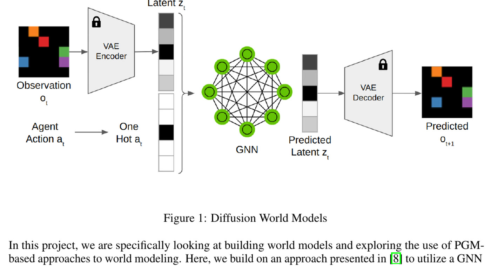
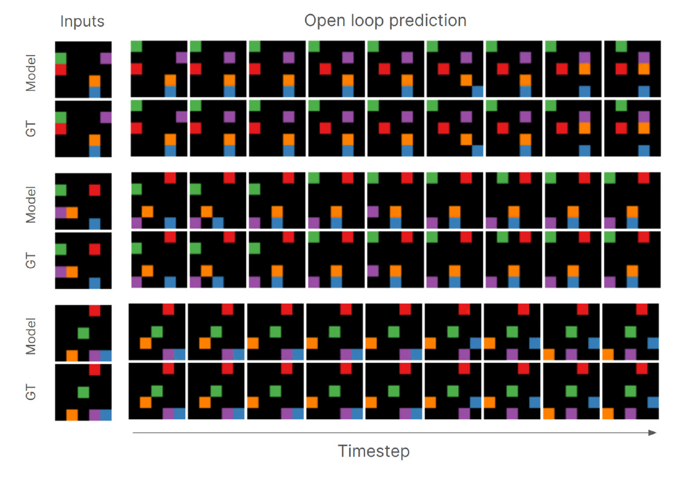
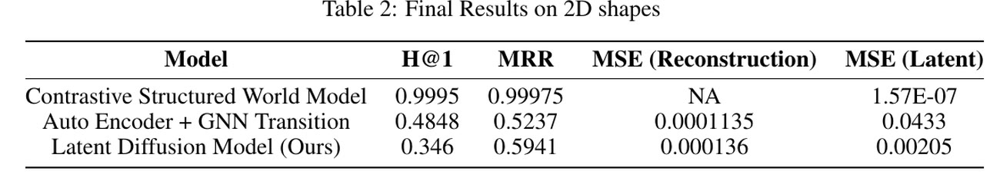

Latents you can predict, latents you can see

Latent world models train the encoder and the transition function together, so the latent drifts toward whatever is easiest to predict rather than whatever can be decoded. The imagined rollout then does not turn back into an image anyone can inspect. The obvious fix, freezing a reconstruction-optimized latent and learning dynamics inside it, moves all the difficulty into the transition model, because a latent chosen for image quality is not shaped for easy prediction.
Diffusion inside a frozen latent

- Froze a variational autoencoder first, guaranteeing the latent is decodable, then learned p(zt+1 | zt, at) entirely inside that fixed latent with a DDPM.
- Noise prediction network: a fully convolutional UNet with Mish activations, FiLM conditioning on the previous latent and a one-hot action, and a squared-cosine noise schedule. Trained with AdamW, a cosine schedule with warm restarts, and an EMA weight copy used at inference.
- Two baselines: a contrastive structured world model (CNN encoder, GNN transition, contrastive loss) and an autoencoder with a GNN transition model, evaluated on Space Invaders, a three-body problem, and a 2D block-pushing environment.
- Measured latent MSE, reconstruction MSE, Hits@1 and mean reciprocal rank, so latent-space prediction quality and image quality are reported separately rather than conflated.
On 2D block pushing the diffusion transition reached 0.00205 latent MSE against 0.0433 for the autoencoder with a GNN transition, and open-loop rollouts held together over 100 successive imagined steps.
What made the transition learnable

- Normalizing the VAE latents was the difference between working and not. Diffusion sampling clips to [-1, 1] and raw VAE latents are not in that range; without normalization the model produced nothing usable.
- FiLM conditioning on the previous latent, plus one-hot action labels. Feeding action class indices directly was consistently worse.
- Separating the two objectives is what buys interpretability. Because the VAE was never asked to make transitions easy, its latent stayed decodable, and a sufficiently expressive transition model absorbed the extra difficulty.